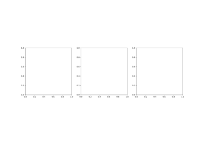

Breakthroughs in Chemical Kinetics#
“Panta rhei” (“everything flows”) – traditionally attributed to Heraclitus of Ephesus (c. 500 BC), as reported by later doxographers (e.g. Plato, Cratylus, 402a); no surviving fragment of Heraclitus’s own writing uses exactly this phrase.
Chemical kinetics is the century-and-a-half-long project of turning “this
reaction is fast” or “this reaction is slow” into an exact, predictive
mathematical statement: a rate law, a temperature dependence, a mechanism
built from elementary steps whose individual rates combine into the
messy, composite behavior actually observed at the bench. The systems in
chemistrykit.kinetics retrace that project from its first
quantitative measurement – a chemist timing how fast sugar turns sour in
acid – through the discovery that some reactions never settle down at
all, oscillating indefinitely instead. This chronology traces the major
conceptual breakthroughs behind the package, with a pointer to the
corresponding implementation at each stop.
1850 – Wilhelmy’s Sucrose Inversion and the First Rate Law#
Ludwig Ferdinand Wilhelmy, studying the acid-catalyzed hydrolysis (“inversion”) of cane sugar into glucose and fructose, made what is usually credited as chemistry’s first genuinely quantitative kinetic measurement: tracking the reaction’s progress by polarimetry (sucrose and its hydrolysis products rotate polarized light differently, so the solution’s optical rotation falls smoothly from the sucrose value toward the product value as the reaction proceeds) and showing that the rate of disappearance of sugar, at each instant, is proportional to the sugar concentration still present.
Integrated, this gives an exponential decay – what would later be classified as a first-order rate law – decades before “order of reaction” existed as a named concept (that came with van’t Hoff, below). Wilhelmy’s paper went largely unnoticed for years; chemistry in 1850 had no established vocabulary or audience for a purely mathematical treatment of reaction progress, and it was only decades later, once kinetics matured as a subfield in its own right, that his measurement was recognized as the field’s true starting point.
Implementation: chemistrykit.kinetics.systems.rate_laws.FirstOrder
implements exactly this exponential decay law and its concentration-
independent half-life, \(t_{1/2} = \ln(2)/k\) – the same
mathematical object Wilhelmy extracted from polarimeter readings, applied
here (as in the example below) to a generic first-order decay rather than
sucrose specifically.
References: L. F. Wilhelmy, “Über das Gesetz, nach welchem die Einwirkung der Säuren auf den Rohrzucker stattfindet,” Poggendorffs Annalen der Physik und Chemie 81, 413-433 and 499-526 (1850). Page ranges are as commonly cited in secondary kinetics literature (e.g. Laidler, Chemical Kinetics, 3rd ed., Ch. 1); the original has not been independently re-verified here.

Zero-, first-, and second-order integrated rate laws
1884 – van’t Hoff’s Etudes de Dynamique Chimique and Reaction Order#
Jacobus Henricus van’t Hoff’s Etudes de Dynamique Chimique did for kinetics what a taxonomy does for a natural history collection: it gave the field a systematic way to classify any reaction by the mathematical form of its rate law, rather than treating each reaction’s behavior as a one-off curiosity. Van’t Hoff showed how to determine a reaction’s order – whether the rate depends on the first, second, or some other power of a reactant’s concentration – directly from data, most simply by comparing how the initial rate changes as an initial concentration is varied, and used the resulting classification (unimolecular, bimolecular, and so on) to organize the still-young field’s scattered results into a coherent whole.
The same 1884 book also contains van’t Hoff’s proposal that an equilibrium constant’s temperature dependence follows an exponential law in \(1/T\) – the germ of the equation Arrhenius would put on a firmer physical footing for rate constants five years later (see 1889, below), and generalize far beyond the handful of reactions van’t Hoff himself had data for.
Implementation: chemistrykit.kinetics.systems.rate_laws.ZeroOrder,
FirstOrder, and
SecondOrder implement
exactly the \(n=0,1,2\) cases of van’t Hoff’s general power-law
classification, each with its own distinct half-life formula (only the
first-order half-life is independent of the starting concentration,
which the example below marks directly); the general
StoichiometricNetwork
engine’s reactant_orders array (see 1922, below) extends the same
classification to networks of coupled elementary steps of arbitrary
order.
References: J. H. van’t Hoff, Etudes de Dynamique Chimique (Amsterdam: Frederik Muller, 1884).

Parallel, consecutive, and reversible reaction networks
Zero-, first-, and second-order integrated rate laws
1889 – Arrhenius and the Temperature Dependence of Reaction Rates#
Svante Arrhenius picked up van’t Hoff’s exponential temperature- dependence form and, testing it against real rate-constant-vs-temperature data – fittingly, the very same acid-catalyzed sucrose inversion Wilhelmy had first quantified nearly forty years earlier – gave it a physical interpretation that turned an empirical curve-fit into a mechanistic claim: only a fraction of reactant molecules, those with energy exceeding a threshold \(E_a\), are “active” enough to react at any given collision, and that fraction grows exponentially with temperature via the Boltzmann factor.
Whether the equation should really be called van’t Hoff’s or Arrhenius’s is a minor, long-settled priority question – van’t Hoff wrote down essentially the same mathematical form first, for equilibrium constants rather than rate constants, but it was Arrhenius who supplied the molecular interpretation, tested it broadly, and whose name the equation has carried ever since. The pre-exponential factor A and activation energy \(E_a\) extracted from an “Arrhenius plot” (\(\ln k\) against \(1/T\)) remain, over a century later, the standard way any new reaction’s temperature sensitivity is reported.
Implementation: arrhenius_rate_constant()
evaluates \(k(T)\) directly; fit_arrhenius()
recovers \((E_a, A)\) from synthetic noisy rate-vs-temperature data via
exactly the linearized Arrhenius-plot method, returning an
ArrheniusFit, and
chemistrykit.kinetics.visualizers.kinetics_plots.plot_arrhenius()
draws the plot itself.
References: S. Arrhenius, “Über die Reaktionsgeschwindigkeit bei der Inversion von Rohrzucker durch Säuren,” Z. Phys. Chem. 4, 226-248 (1889).

Recovering an activation energy from an Arrhenius plot
1910 – 1920 – Lotka’s Autocatalytic Oscillating Reactions#
Alfred J. Lotka asked a question that, at the time, sounded almost paradoxical: could a purely chemical mechanism – no biology, no external clock – make a concentration rise and fall periodically forever, rather than settling monotonically toward equilibrium the way every reaction studied since Wilhelmy did? His 1910 scheme, an autocatalytic sequence in which an intermediate X catalyzes its own production from a reservoir A and is in turn consumed by a second autocatalytic step producing Y, showed damped oscillations relaxing into the system’s stable equilibrium – rhythmic, but not sustained. His better-known 1920 model, a simplified two-variable version of the same idea, does support genuinely periodic solutions, but of a fragile kind: the orbits are neutrally stable, forming a continuous family of closed curves nested around the fixed point, rather than a single, structurally robust limit cycle that neighboring trajectories are drawn onto. Perturb a Lotka-type system even slightly and it can drift onto a different one of these neutral orbits forever; nothing pulls it back to a preferred amplitude. That distinction – oscillation that merely exists, versus oscillation that is dynamically stable – is exactly what the Brusselator (1968, below) would later supply, and is why Lotka’s chemical scheme is remembered today mostly through its later, structurally identical reincarnation as the Lotka-Volterra predator-prey equations in ecology, rather than as a chemistry result in its own right.
Connection: chemistrykit.kinetics has no standalone implementation of
Lotka’s original two- or three-species chemical scheme, but
is_above_hopf_threshold()
draws exactly the distinction Lotka’s model lacks: below its threshold
the Brusselator’s fixed point is a stable focus, and above it, a genuine
attracting limit cycle – structurally stable to small perturbations,
unlike the neutral orbits of Lotka’s 1920 model – surrounds an unstable
focus.
References: A. J. Lotka, “Contribution to the Theory of Periodic Reactions,” J. Phys. Chem. 14, 271-274 (1910); A. J. Lotka, “Analytical Note on Certain Rhythmic Relations in Organic Systems,” Proc. Natl. Acad. Sci. USA 6, 410-415 (1920).

1903 – 1913 – Michaelis and Menten’s Enzyme Kinetics#
Victor Henri proposed in 1903 that an enzyme-catalyzed reaction proceeds through a bound enzyme-substrate complex whose formation and breakdown, taken together, explain why the reaction rate saturates at high substrate concentration instead of growing without bound – but his experiments predated routine pH buffering, and uncontrolled pH drift confounded his rate measurements enough that the proposal remained a plausible but unconfirmed hypothesis. Leonor Michaelis and Maud Menten repeated and extended Henri’s program a decade later with rigorously buffered solutions, and derived the now-standard saturation law from an explicit pre-equilibrium between free and substrate-bound enzyme:
Menten, a Canadian physician-scientist working with Michaelis in Berlin at a time when few women held research positions in continental European chemistry, did the bulk of the meticulous kinetic runs the 1913 paper reports; the resulting rate law – half of \(V_{max}\) reached exactly at \([S] = K_m\) – became the organizing equation for essentially all of enzyme kinetics that followed, and the direct ancestor of the Lineweaver-Burk linearization built on top of it two decades later (see 1934, below).
Implementation: michaelis_menten_rate()
evaluates exactly this rate law, and
MichaelisMentenProgress
integrates the corresponding substrate-depletion progress curve
d[S]/dt = -Vmax*[S]/(Km+[S]) numerically – the assay curve an enzyme
kinetics experiment actually records, as opposed to the initial-rate
snapshots michaelis_menten_rate() itself describes;
competitive_inhibition_rate()
and noncompetitive_inhibition_rate()
extend the same rate law to the two classic modes of enzyme inhibition.
References: L. Michaelis and M. L. Menten, “Die Kinetik der Invertinwirkung,” Biochem. Z. 49, 333-369 (1913); V. Henri, Lois Generales de l’Action des Diastases (Paris: Hermann, 1903).

Michaelis-Menten kinetics, Lineweaver-Burk, and inhibition
1913 – 1922 – Bodenstein and Lindemann: the Steady-State Approximation and Unimolecular Reactions#
Max Bodenstein, analyzing chain reactions whose reactive intermediates never accumulate to any appreciable concentration, introduced what is now simply called the steady-state approximation: treat a highly reactive intermediate’s net rate of change as (approximately) zero at every instant after a brief induction period, since it is consumed almost as fast as it forms. The trick converts an otherwise intractable coupled system into simple algebra for the intermediate’s quasi-constant concentration.
A decade later, Frederick Lindemann – in a short discussion remark rather than a full paper, at a Faraday Society meeting on the radiation theory of chemical action – used exactly this idea to resolve a real puzzle: unimolecular gas-phase decompositions were assumed, by their very name, to be first order, yet at low pressure their observed order visibly drifted toward second order. Lindemann’s proposed resolution: a molecule A must first be collisionally activated to an energized state \(A^*\) (bimolecular, rate \(k_1[A][M]\)) before it can either be collisionally deactivated again (\(k_{-1}[A^*][M]\)) or decompose unimolecularly (\(k_2[A^*]\)). Applying Bodenstein’s steady-state approximation to the short-lived intermediate \(A^*\) recovers a rate law that is genuinely first order at high pressure (where deactivation dominates and re-forms the pre-activation equilibrium) but falls to second order at low pressure (where every activation event leads directly to reaction, since there are too few collisions left to deactivate \(A^*\) again) – exactly the crossover the data showed. J. A. Christiansen arrived at essentially the same mechanism independently at almost the same time, in his 1921 Copenhagen doctoral thesis, so the scheme is sometimes credited jointly as the Lindemann-Christiansen mechanism.
Implementation: while chemistrykit.kinetics has no dedicated
activation/deactivation unimolecular-mechanism class, the steady-state
logic Lindemann applied to \(A^*\) is exactly what
ssa_intermediate_concentration()
demonstrates for the analogous two-step chain A -> B -> C: it
computes the steady-state estimate \([B]_{ssa} = (k_1/k_2)[A](t)\),
and the example below shows it converging to the numerically integrated
exact intermediate concentration – via
StoichiometricNetwork
and the closed-form consecutive_analytic()
(Bateman) solution – as the second step is made increasingly fast
relative to the first, precisely the separation-of-timescales condition
the approximation requires.
References: M. Bodenstein, “Eine Theorie der photochemischen Reaktionsgeschwindigkeiten,” Z. Phys. Chem. 85, 329-397 (1913); F. A. Lindemann, discussion remark in “Discussion on the Radiation Theory of Chemical Action,” Trans. Faraday Soc. 17, 598-606 (1922).
Parallel, consecutive, and reversible reaction networks
1928 – 1956 – Semenov, Hinshelwood, and Chain-Branching Explosions#
An ordinary chain reaction propagates: one radical consumed, one radical produced, over and over, at a roughly constant population. Nikolai Semenov’s theoretical work on combustion, beginning in the late 1920s, and Cyril Hinshelwood’s experimental studies of the hydrogen-oxygen reaction over the same years identified a qualitatively different, far more dangerous possibility: a branching chain step, in which a single radical’s reaction produces two (or more) new radicals rather than one, can make the radical population grow exponentially rather than stay constant. Hinshelwood’s group’s most striking experimental finding was that the hydrogen-oxygen mixture’s explosive or non-explosive behavior depends on pressure in a genuinely non-monotonic way – tracing out an “explosion peninsula” with three separate explosion limits as pressure is increased at fixed temperature, rather than a single threshold – a result that took the branching-versus-termination competition Semenov’s theory describes to explain. Semenov’s theory supplies the underlying switch in closed form: whichever process wins the competition between radical-multiplying branching steps and radical-consuming termination steps (typically destruction at a vessel’s walls, or by a third-body collision) determines whether the system relaxes to a low steady radical concentration or ignites. Semenov and Hinshelwood shared the 1956 Nobel Prize in Chemistry “for their researches into the mechanism of chemical reactions,” recognizing two largely independent – theoretical and experimental – routes to the same branching-chain picture.
Implementation: chemistrykit.kinetics.systems.networks.StoichiometricNetwork’s
general mass-action engine, with no dedicated branching-chain class
needed, reproduces Semenov’s critical condition directly: the example
below builds a three-step mechanism (initiation \(A \to 2R\),
branching propagation \(A + R \to 2R + P\), and linear termination
\(R \to P\)) and integrates it twice, with the branching rate
constant set just below and just above the critical value at which
branching overtakes termination – reproducing, respectively, a radical
population that stays small while the fuel decays gently, and one that
grows explosively and burns through nearly all of the fuel in a short,
sharp spike.
References: N. Semenoff, “Zur Theorie des Verbrennungsprozesses,” Z. Phys. 48, 571-582 (1928); N. N. Semenov, Chemical Kinetics and Chain Reactions (Oxford: Clarendon Press, 1935); C. N. Hinshelwood and collaborators’ explosion-limit studies of the hydrogen-oxygen reaction, reported across several Proc. R. Soc. Lond. A papers in the late 1920s (exact volume/page for any single paper is not independently verified here; see Hinshelwood, The Kinetics of Chemical Change (Oxford: Clarendon Press, 1940), Ch. 4, for the synthesized account).

Chain-branching explosions and Semenov’s critical condition
1934 – Lineweaver and Burk’s Double-Reciprocal Linearization#
Hans Lineweaver and Dean Burk noticed that inverting the Michaelis-Menten equation turns a curved saturation plot into a straight line,
so that plotting \(1/v\) against \(1/[S]\) – the “Lineweaver-Burk” or “double-reciprocal” plot – lets \(V_{max}\) and \(K_m\) be read off directly as the intercept and slope of an ordinary linear regression, without ever having to fit a curve. For decades this became the standard way enzyme kinetics parameters were extracted and reported, valued above all for how easy it made a rate law fit by eye or by a slide rule. Its popularity outlasted its statistical soundness: the reciprocal transformation badly distorts the experimental error structure, inflating the influence of the noisiest, lowest-substrate-concentration points on the fitted line – a flaw well documented since at least the 1950s, and the reason modern practice generally prefers fitting the untransformed Michaelis-Menten equation directly by nonlinear regression. The double-reciprocal plot survives today mainly as a clear diagnostic picture (e.g. for reading off the qualitative signature of an inhibition mode), rather than as a fitting method to be trusted quantitatively.
Implementation: fit_lineweaver_burk()
implements exactly this double-reciprocal ordinary-least-squares fit,
returning a MichaelisMentenFit,
and chemistrykit.kinetics.visualizers.kinetics_plots.plot_lineweaver_burk()
draws the plot – reused in the same example as the underlying
Michaelis-Menten rate law it linearizes.
References: H. Lineweaver and D. Burk, “The Determination of Enzyme Dissociation Constants,” J. Am. Chem. Soc. 56, 658-666 (1934).
Michaelis-Menten kinetics, Lineweaver-Burk, and inhibition
1935 – Eyring, Evans, Polanyi, and Transition-State Theory#
The Arrhenius equation is superb at describing a reaction’s temperature dependence but is silent on where the pre-exponential factor A and activation energy \(E_a\) actually come from – they are fitted numbers, not predictions. Henry Eyring, and independently Meredith Gwynne Evans and Michael Polanyi, supplied a first-principles answer the same year: reactants pass through a fleeting, high-energy configuration – the activated complex, or transition state – sitting at the saddle point of the reaction’s potential-energy surface, and the overall rate is fixed by how that transition state’s own partition function compares to the reactants’, via
Transition-state theory reframed a rate constant as a genuinely computable equilibrium property (of the activated complex) times a universal frequency factor \(k_B T/h\), rather than an empirically fitted curve – and gave the Arrhenius equation’s A and \(E_a\) a theoretical home, respectively in the transition state’s entropy and enthalpy of activation.
Connection: chemistrykit.kinetics does not implement a
partition-function-based transition-state rate calculation, but
chemistrykit.kinetics.systems.arrhenius.ArrheniusFit’s empirical
A and Ea are exactly the two quantities transition-state theory set
out to explain from first principles rather than merely measure –
fit_arrhenius() recovers
them from data the same way a real kinetics lab would, without needing
any transition-state calculation to do so.
References: H. Eyring, “The Activated Complex in Chemical Reactions,” J. Chem. Phys. 3, 107-115 (1935); M. G. Evans and M. Polanyi, “Some Applications of the Transition State Method to the Calculation of Reaction Velocities, Especially in Solution,” Trans. Faraday Soc. 31, 875-894 (1935).
Recovering an activation energy from an Arrhenius plot
1951 – 1974 – Belousov, Zhabotinsky, and the Oregonator#
Boris Belousov, studying a cerium-catalyzed variant of the Krebs citric acid cycle in vitro, observed the solution’s color oscillate repeatedly between yellow and colorless – a sustained chemical oscillation in a closed, well-stirred beaker, with no external periodic forcing at all. Chemical orthodoxy at the time held this to be essentially impossible: a reaction mixture, left to itself, was assumed to relax monotonically toward equilibrium, and an oscillating concentration looked to reviewers like a violation of that expectation (in fact it violates nothing – the mixture is simply far from equilibrium throughout the many periods it takes to actually get there – but the intuition that oscillation implied some error in the experiment was widely shared). Belousov’s manuscript was rejected by more than one chemistry journal through the 1950s, and he ultimately published only a brief, hard-to-find abstract rather than a full paper. Anatol Zhabotinsky, a graduate student who took up the reaction’s study in the early 1960s at his advisor’s suggestion, supplied the thorough experimental characterization that eventually convinced the field the phenomenon was real. Richard Field, Endre Koros, and Richard Noyes then worked out an explicit, chemically literal mechanism for the reaction (the “FKN mechanism,” 1972) built from real bromate/cerium/malonic-acid chemistry, and Field and Noyes distilled its essential dynamics into a minimal three-variable model, the “Oregonator” (1974) – structurally the same kind of object as the Brusselator below: an autocatalytic step driving a Hopf bifurcation to a stable limit cycle, but built to match one specific, real oscillating reaction’s chemistry rather than serving as an abstract minimal example.
Connection: chemistrykit.kinetics does not implement the
Belousov-Zhabotinsky mechanism or the Oregonator specifically, but
is_above_hopf_threshold()
and the limit-cycle behavior it distinguishes are exactly the
mathematical mechanism – a chemical Hopf bifurcation to sustained,
structurally stable oscillation – that both the Oregonator and the
Brusselator instantiate, one built to model a specific real reaction and
the other built as the field’s minimal abstract example of the same
phenomenon.
References: B. P. Belousov, in Sbornik Referatov po Radiatsionnoi Meditsine za 1958 god (Moscow: Medgiz, 1959) (a brief abstract; exact page not independently verified here; frequently discussed rather than directly cited in secondary literature given how obscure the original publication is); A. M. Zhabotinsky, Biofizika 9, 306-311 (1964); R. J. Field, E. Koros, and R. M. Noyes, “Oscillations in Chemical Systems II,” J. Am. Chem. Soc. 94, 8649-8664 (1972); R. J. Field and R. M. Noyes, “Oscillations in Chemical Systems IV. Limit Cycle Behavior in a Model of a Real Chemical Reaction,” J. Chem. Phys. 60, 1877-1884 (1974).
1968 – Prigogine and Lefever’s Brusselator#
Ilya Prigogine and Rene Lefever, working at the Free University of Brussels on the general theory of dissipative structures – ordered behavior that only exists because a system is continuously driven far from equilibrium, the theoretical framework for which Prigogine would receive the 1977 Nobel Prize – proposed the simplest possible chemical mechanism that could serve as that theory’s minimal working example: four elementary steps, reducing (with the reservoir species held constant) to just two coupled ODEs for two intermediates X and Y,
Unlike Lotka’s earlier oscillating schemes (1910-1920, above), the Brusselator’s oscillation is a genuine limit cycle: below a critical value of the parameter B, the single fixed point \((X^*, Y^*) = (A, B/A)\) is a stable focus that every trajectory relaxes toward; above it, a Hopf bifurcation flips that same fixed point unstable and surrounds it with an attracting periodic orbit that nearby trajectories are drawn onto regardless of where they start – structurally stable oscillation, in exactly the sense Lotka’s neutral orbits were not. The name “Brusselator” (coined, in the style of “oscillator,” after Prigogine and Lefever’s home institution) has since become the standard minimal toy model for nonlinear chemical dynamics, cited far more often as a mathematical testbed than as a description of any specific real reaction.
Implementation: chemistrykit.kinetics.systems.oscillators.Brusselator
integrates exactly this two-variable system;
fixed_point()
returns the steady state \((A, B/A)\) and
is_above_hopf_threshold()
tests Prigogine and Lefever’s exact bifurcation condition \(B > 1 +
A^2\); the example below integrates the same mechanism on both sides of
that threshold and shows relaxation to the fixed point below it giving
way to a sustained limit cycle above it, in both the concentration-vs-time
and (X, Y) phase-portrait views.
References: I. Prigogine and R. Lefever, “Symmetry Breaking Instabilities in Dissipative Systems. II,” J. Chem. Phys. 48, 1695-1700 (1968); see also G. Nicolis and I. Prigogine, Self-Organization in Nonequilibrium Systems (New York: Wiley, 1977), Ch. 7.